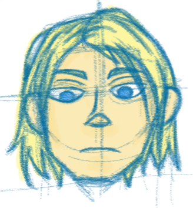
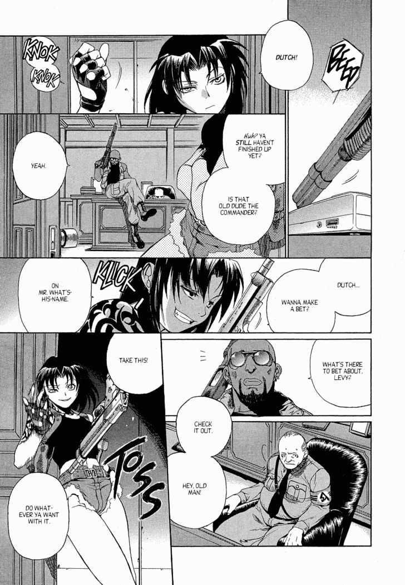
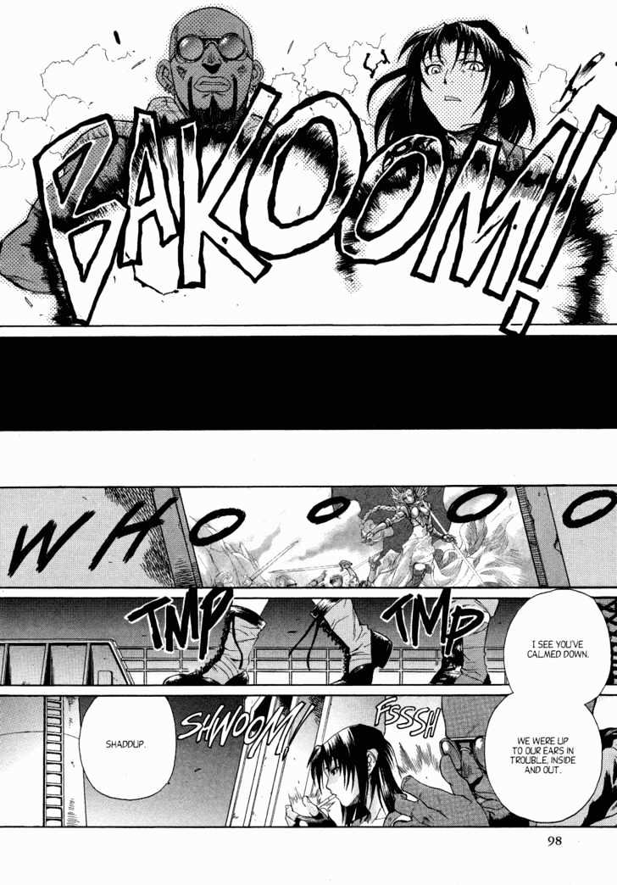
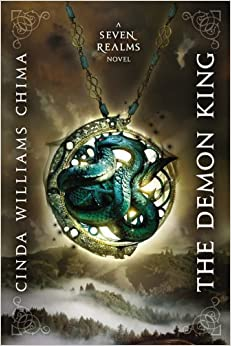

SRP: Han's Character Design

I've started drawing what I image Han to look like. The face is fine, but I have trouble drawing bodies and complex poses (I'll have to practice more). I have a lot of ideas runnnig through my head about concept art for Han, but my lack of skills are really getting in the way...
SRP: Glossary

I've started on a gloassary for the terms, locations, groups, and important items in the story.
This list will continue to grow, but you can view what I have so far here
SRP: Character Desriptions
I started putting together details about each character's appearance, personality, and background. I'll add more as the characters appear in the novels and as the information comes up.
Click here to see what I have so far.
Fun Fact:
The torch icon used as a placeholder for images is actually fanart of the Seven Realms novels I made. It's supposed to be my house's emblem. I had a whole backstory of the house being made up of illegitimate children of other wizard houses as well as wizards that didn't have a wizard house to begin with. The gray box can be interpreted as an empty picture frame or the structural supports of a house, and is supposed to represent how each member can now create their own home and family and identity. The touch is a classic symbol of guidance. The idea was that each member could put whatever symbol they wanted in the box. My character puts a torch. Others can put whatever or leave it blank and they'll still be part of the same house.
SRP: Chapter One Outlining


I finished the outline for chapter one a couple weeks ago and am working on the second part of the script.
Before I continue scripting, I want to make sure the panel layout for chapter one flows well so far. After reading a couple chapters of Black Lagoon, I realize that there can be too many panels on the page (I think Maore could've given many panels full or half page space, especially since it's an action manga).
I'll do some rough sketches to see how it looks.
Seven Realms Project

Cinda Williams Chima's Seven Realms Novels are just a few of many books that I feel were missed opportunities for adaptation. It's medieval fantasy setting and relatively mature themes would fit well with fans of Lord of the Rings or Game of Thrones. Maybe... I didn't like Lord of the Rings, but I think they are good stories, so at least the YA or general audience would enjoy it.
The list can be found here
My goal is to turn the books into comics (I would animate, but I'm not good at it and don't want to get voice actors). I've already been working on this for about 2 months. I've been turning the chapters into scripts, documenting the locations and terms and important objects, and creating character designs.
Read the books here.